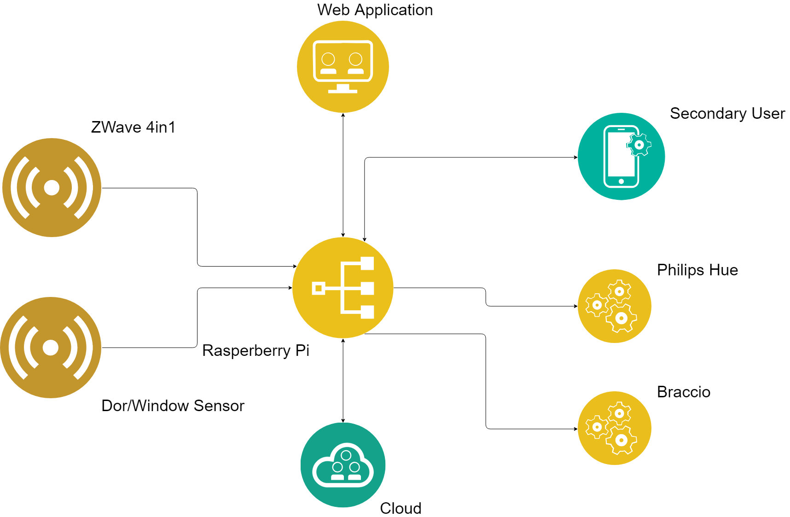
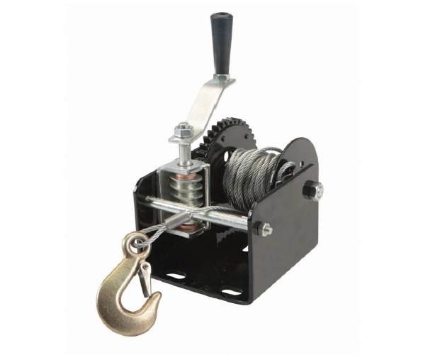
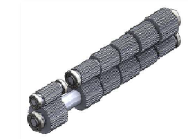

Academic Projects
Following are some of the academic projects that I have made

Above is a ambient project that I had performed in a team for a course that I took in my bachelor
degree. It's primary goal was to protect the toddlers that under go in the domestic enviroment. We had used a
raspberry pi and some sensors such as Zwave 4 in 1, Door sensors, etc. Please click the thumbanail to visit the
project site.

It is a voluntery project that was done to biomimic a jelly fish and create a robot with a
same kind of movement behaviour. Please click on thumbnail to take a look

This is a academic project which I participated in University of Arkansas. Aim of this project was
to identify the vulnerable positions in a commercially used trailer for its failure. After modeling the device, FEA
was used to verify the results obtain by hand calculation. Please click the thumbnail to take a look in the project.

It is a redesign engineering academic project I participated in University of Arkansa (USA). A gearbox of a honda
civic was redesign to have a higher torque at given rpm. Please click the thumbnail to take a look at the project.